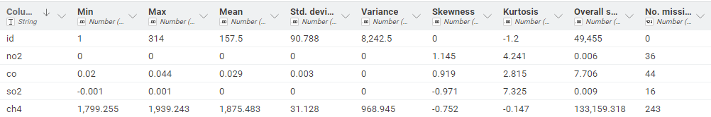
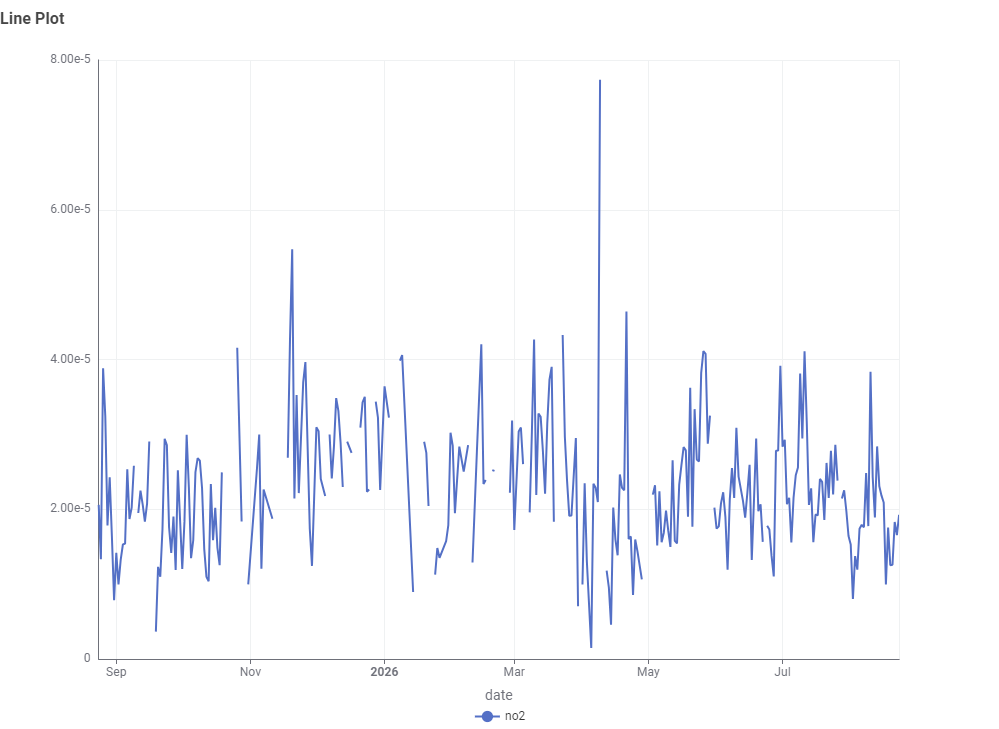
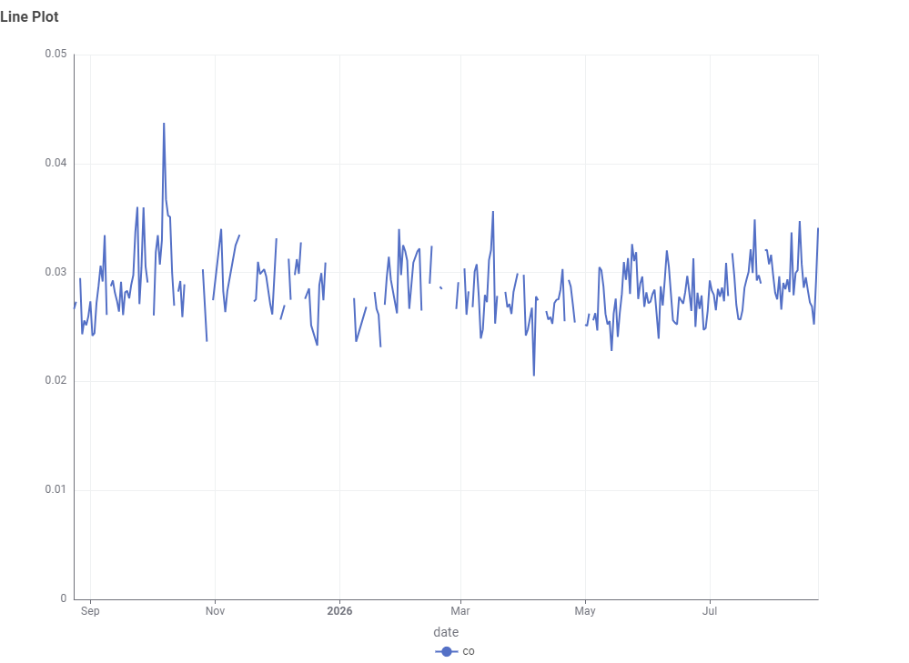
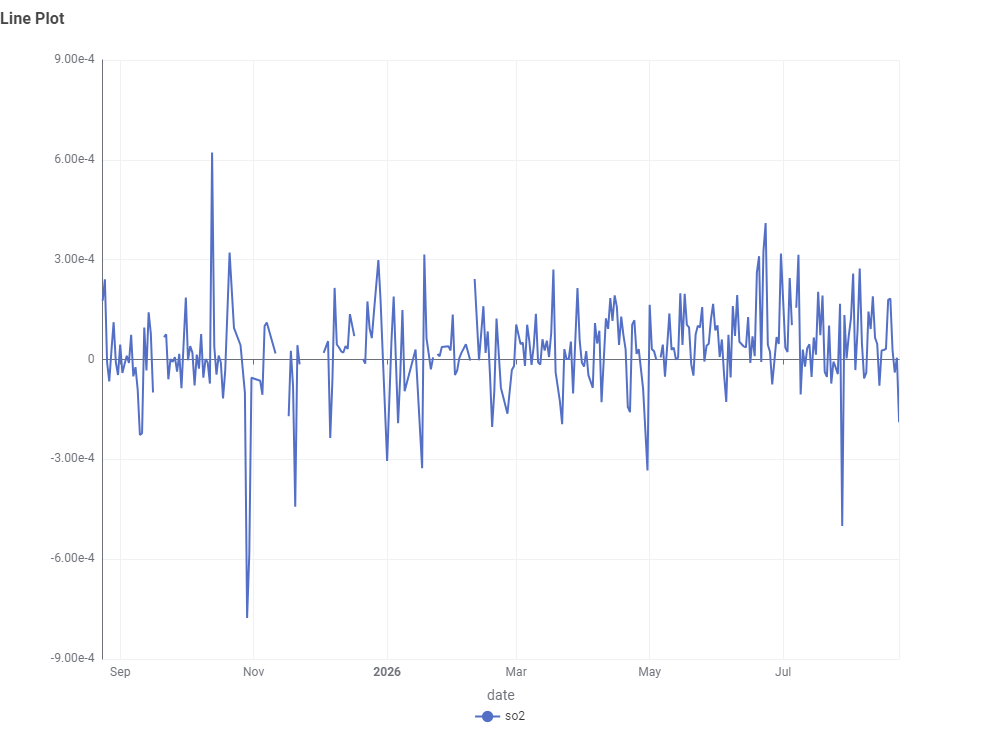
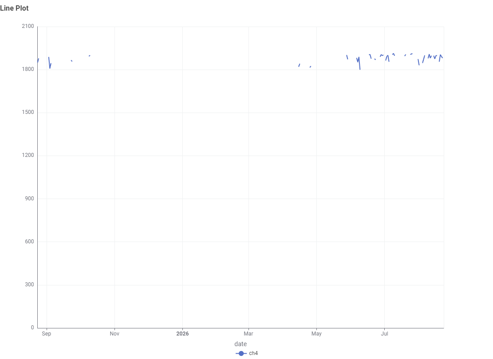
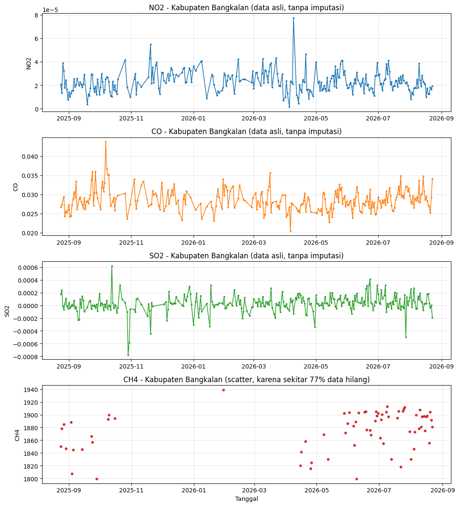
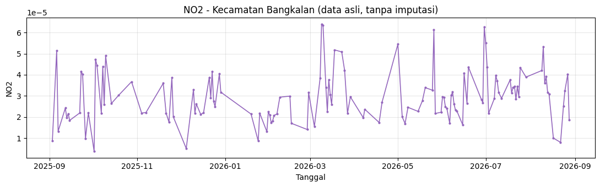

Data Understanding - Kabupaten Bangkalan#
Data Understanding adalah tahap untuk mengenali sumber data, cakupan wilayah dan waktu, cara memperoleh data, struktur data, serta melakukan profil awal (statistik deskriptif) terhadap data yang akan dipakai pada analisis kualitas udara Kabupaten Bangkalan. Dokumen ini juga mencakup tahap preprocessing dan ekstraksi fitur yang ditambahkan pada Tugas 3 (Bagian 11-13).
1. Sumber Data#
Item |
Keterangan |
|---|---|
Sumber |
Copernicus Data Space Ecosystem |
Layanan |
openEO |
Server |
|
Produk / Koleksi |
Sentinel-5P L2 ( |
Instrumen |
TROPOMI (TROPOspheric Monitoring Instrument) |
Polutan |
NO2, CO, SO2, CH4 |
Periode |
24 Agustus 2025 sampai dengan 24 Agustus 2026 |
Lokasi |
Kabupaten Bangkalan, Jawa Timur |
Sentinel-5P adalah satelit milik European Space Agency (ESA) yang membawa instrumen TROPOMI, dirancang khusus untuk memantau komposisi atmosfer Bumi, termasuk gas rumah kaca dan polutan udara. Satelit ini memiliki waktu kunjung ulang (revisit time) sekitar satu hari untuk cakupan global, sehingga cocok dipakai untuk analisis deret waktu harian.
1.1 Resolusi Spasial per Polutan#
Perlu dicatat bahwa resolusi spasial data TROPOMI berbeda untuk tiap polutan, sehingga tingkat kedetailan spasial yang diperoleh juga berbeda.
Polutan |
Resolusi Spasial (perkiraan) |
|---|---|
NO2 |
sekitar 5.5 km x 3.5 km |
SO2 |
sekitar 5.5 km x 3.5 km |
CO |
sekitar 7 km x 7 km |
CH4 |
sekitar 7 km x 7 km |
Karena luas Kabupaten Bangkalan hanya sekitar 1.260 km persegi, setiap piksel Sentinel-5P dapat mencakup area yang cukup luas relatif terhadap ukuran kabupaten. Oleh karena itu, agregasi spasial (dijelaskan pada bagian 4) digunakan untuk merangkum seluruh piksel yang berada di dalam wilayah Bangkalan menjadi satu nilai representatif per hari.
2. Koneksi dan Otentikasi#
Koneksi ke server openEO dilakukan menggunakan akun Copernicus Data Space Ecosystem, melalui metode device code flow.
import openeo
connection = openeo.connect("openeo.dataspace.copernicus.eu")
connection = connection.authenticate_oidc()
Saat kode di atas dijalankan, klien akan menampilkan tautan login beserta kode singkat di layar. Setelah login berhasil dilakukan melalui browser, koneksi akan terautentikasi secara otomatis untuk seluruh permintaan data berikutnya.
Perlu dicatat bahwa backend Sentinel Hub untuk koleksi SENTINEL_5P_L2
hanya mengizinkan satu band, yaitu satu polutan, pada setiap proses
permintaan data. Oleh karena itu, proses ekstraksi harus dilakukan secara
terpisah untuk NO2, CO, SO2, dan CH4, bukan sekaligus dalam satu
permintaan.
3. Area of Interest (AOI) Kabupaten Bangkalan#
AOI didefinisikan sebagai batas administratif asli Kabupaten Bangkalan
(bentuk polygon sesuai wilayah sebenarnya), bukan kotak bounding box.
Polygon ini diambil dari data batas administratif resmi (GADM level 2,
kode wilayah BPS/Kemendagri 3526), lalu disederhanakan agar tidak terlalu
berat saat dikirim sebagai parameter permintaan ke openEO, namun tetap
mengikuti lekukan pesisir dan bentuk asli kabupaten, tersimpan sebagai
../data/bangkalan-boundary.geojson.
import json
with open("../data/bangkalan-boundary.geojson", encoding="utf-8") as f:
bangkalan_geojson = json.load(f)
bangkalan_polygon = bangkalan_geojson["geometry"] # objek Polygon GeoJSON
Bounding box (west, south, east, north) tetap dihitung, tetapi
hanya dipakai sebagai batas kasar pada parameter spatial_extent di
load_collection, sekadar mempersempit area unduhan data mentah. Batas
yang sesungguhnya dipakai untuk agregasi spasial pada aggregate_spatial
adalah polygon administratif di atas, bukan kotak ini.
lons = [pt[0] for pt in bangkalan_polygon["coordinates"][0]]
lats = [pt[1] for pt in bangkalan_polygon["coordinates"][0]]
bangkalan_bbox = {
"west": min(lons),
"east": max(lons),
"south": min(lats),
"north": max(lats),
}
4. Proses Ekstraksi Data#
Untuk setiap polutan, data dimuat, diagregasi secara temporal (harian, mean), lalu diagregasi secara spasial (mean di dalam polygon AOI asli Bangkalan).
s5 = connection.load_collection(
"SENTINEL_5P_L2",
temporal_extent=["2025-08-24", "2025-11-24"], # satu bagian 3 bulan
spatial_extent=bangkalan_bbox,
bands=["NO2"], # ganti sesuai polutan: NO2, CO, SO2, atau CH4
)
s5 = s5.aggregate_temporal_period(reducer="mean", period="day")
s5 = s5.aggregate_spatial(reducer="mean", geometries=bangkalan_polygon)
job = s5.save_result(format="netCDF").create_job(title="NO2 Bangkalan bagian 1")
job.start_and_wait()
Catatan penting: permintaan data untuk rentang waktu 12 bulan
sekaligus dalam satu job ternyata tidak stabil pada backend openEO
Copernicus Data Space, sehingga sebagian hasil bisa kembali sebagai nilai
kosong meskipun status job menyatakan sukses. Oleh karena itu, rentang
waktu 24 Agustus 2025 sampai 24 Agustus 2026 dipecah menjadi 4 bagian
per 3 bulan, masing masing dijalankan sebagai job terpisah, lalu hasilnya
digabungkan kembali menjadi satu deret waktu utuh per polutan. Detail
lengkap kode ekstraksi, pemecahan rentang waktu, dan penggabungan hasil
tersedia pada notebook 1-ekstraksi-data.ipynb.
5. Struktur Data Hasil#
Seluruh hasil ekstraksi (4 polutan x 4 bagian waktu) digabungkan menjadi satu tabel tunggal, mirip struktur tabel pada basis data, dengan satu baris per tanggal dan satu kolom per polutan.
Kolom |
Tipe Data |
Keterangan |
|---|---|---|
|
datetime |
Tanggal pengukuran (harian) |
|
float |
Nilai konsentrasi rata rata harian NO2 pada wilayah Bangkalan |
|
float |
Nilai konsentrasi rata rata harian CO pada wilayah Bangkalan |
|
float |
Nilai konsentrasi rata rata harian SO2 pada wilayah Bangkalan |
|
float |
Nilai konsentrasi rata rata harian CH4 pada wilayah Bangkalan |
Contoh isi file data_polutan_bangkalan.csv:
date |
NO2 |
CO |
SO2 |
CH4 |
|---|---|---|---|---|
2025-08-24 |
0.000021 |
0.021 |
0.0004 |
0.00019 |
2025-08-25 |
0.000013 |
0.020 |
0.0003 |
0.00018 |
… |
… |
… |
… |
… |
Hanya ada satu file CSV yang dihasilkan, yaitu data_polutan_bangkalan.csv.
File NetCDF mentah per polutan per bagian waktu tetap disimpan di folder
../data/nc/ sebagai data mentah untuk keperluan pelacakan (traceability)
atau pemeriksaan ulang.
6. Keterbatasan Data#
Beberapa keterbatasan yang perlu disadari sejak tahap ini:
Resolusi spasial relatif kasar dibanding luas Kabupaten Bangkalan, sehingga nilai yang diperoleh merupakan rata rata area yang cukup luas, bukan potret polusi pada titik tertentu.
Kemungkinan data kosong pada hari tertentu, terutama akibat tutupan awan yang menghalangi pengukuran instrumen berbasis optik.
Nilai dapat berupa estimasi kolom atmosfer, bukan konsentrasi permukaan tanah secara langsung, sehingga interpretasinya perlu berhati hati saat dikaitkan dengan dampak kesehatan langsung pada manusia di permukaan.
Keterbatasan backend untuk rentang waktu panjang, sebagaimana dijelaskan pada Bagian 4, yang diatasi dengan memecah permintaan menjadi beberapa bagian.
7. Statistik Deskriptif Data (KNIME)#
Sesuai arahan tugas terbaru, profil statistik data dilakukan menggunakan KNIME Analytics Platform, dengan data yang sudah disimpan pada basis data PostgreSQL. Alur kerja (workflow) yang digunakan terdiri atas empat node berikut.
Urutan |
Node |
Fungsi |
|---|---|---|
1 |
PostgreSQL Connector |
Membuka koneksi ke basis data PostgreSQL tempat tabel |
2 |
DB Table Selector |
Memilih tabel |
3 |
DB Reader |
Mengeksekusi query dan menarik seluruh baris tabel ke dalam KNIME sebagai data tabular. |
4 |
Statistics |
Menghitung statistik deskriptif (jumlah data, rata rata, standar deviasi, nilai minimum, nilai maksimum, kuartil, dan jumlah nilai hilang) untuk setiap kolom numerik ( |
Hasil dari node Statistics kurang lebih berbentuk tabel berikut (nilai aktual mengikuti hasil eksekusi workflow, tabel di bawah adalah struktur/contoh format):
Kolom |
Jumlah Data |
Rata rata |
Std. Deviasi |
Minimum |
Maksimum |
Jumlah Missing |
|---|---|---|---|---|---|---|
NO2 |
… |
2.302440840087907E-5 |
9.095765772494764E-6 |
1.4641619685562546E-6 |
7.737131090834737E-5 |
36 |
CO |
… |
0.02854252029334975 |
0.0028298056860232863 |
0.0204873513430356 |
0.0437335954543123 |
44 |
SO2 |
… |
3.0178378533436094E-5 |
1.3511354212947474E-4 |
-7.769338553771377E-4 |
6.219266880569714E-4 |
16 |
CH4 |
… |
1875.483347360375 |
31.127873701991152 |
1799.2550048828125 |
1939.2427571614585 |
243 |

8. Visualisasi Time Series#
Selain statistik deskriptif, workflow KNIME perlu dilengkapi satu node tambahan untuk memvisualisasikan data sebagai deret waktu, karena node Statistics hanya menghasilkan angka ringkasan, bukan grafik.
Node tambahan yang disarankan: hubungkan output node DB Reader ke node Line Plot (tersedia di kategori Views pada KNIME), dengan konfigurasi:
Sumbu X: kolom
dateSumbu Y: kolom
NO2,CO,SO2, danCH4(dapat dipisah menjadi empat node Line Plot, satu per polutan, agar skala sumbu Y tidak saling mengganggu karena rentang nilai tiap polutan berbeda cukup jauh)
Grafik deret waktu ini menampilkan naik turunnya konsentrasi tiap polutan sepanjang periode 24 Agustus 2025 sampai 24 Agustus 2026, dan menjadi bahan visual utama pada bagian Data Understanding untuk melihat pola awal sebelum data diproses lebih lanjut pada tugas berikutnya.
Line Plot NO2:

Line Plot CO:

Line PLot SO2:

Line Plot CH4:

8.1 Visualisasi Tambahan Menggunakan Library Python#
Selain Line Plot dari KNIME di atas, deret waktu yang sama juga divisualisasikan menggunakan library Python (matplotlib) sebagai pembanding sekaligus alternatif yang dapat dijalankan langsung di dalam Jupyter Book ini.

Dari grafik di atas terlihat NO2, CO, dan SO2 punya cakupan data yang relatif baik (masing masing sekitar 85-95% hari terisi), sementara CH4 paling banyak kehilangan data (hanya sekitar 23% hari yang punya pengukuran), sehingga pola musimannya belum bisa disimpulkan dengan yakin dari data mentah ini saja.
9. Catatan Jika Hasil Ekstraksi Bernilai 0#
Jika seluruh nilai pada tabel hasil ekstraksi terlihat bernilai 0, hal ini umumnya bukan berarti udara benar benar bersih sempurna, melainkan menandakan salah satu dari beberapa kemungkinan berikut.
Nama band yang diminta tidak sesuai dengan nama band pada koleksi
SENTINEL_5P_L2(bersifat case sensitive).Nilai kosong (NaN) akibat tutupan awan tidak sengaja terisi 0 pada suatu tahap pemrosesan, alih alih dibiarkan sebagai data hilang.
Nilai konsentrasi memang sangat kecil (orde 1e-4 hingga 1e-6), sehingga terlihat seperti 0.000000 jika dicetak dengan pembulatan yang terlalu sedikit angka desimal.
Kesalahan pada kode pembacaan NetCDF yang salah memilih kolom (misalnya ikut membaca kolom indeks fitur alih alih kolom nilai polutan).
Notebook 1-ekstraksi-data.ipynb menyediakan sel uji coba dan diagnostik
khusus untuk memeriksa kemungkinan kemungkinan ini sebelum menjalankan
ekstraksi penuh setahun.
10. Perluasan pada Tugas 3: AOI Kecamatan dan Rentang Waktu Baru#
Tugas 3 mempersempit cakupan wilayah dari Kabupaten Bangkalan menjadi Kecamatan Bangkalan saja (kecamatan tempat ibu kota kabupaten berada), mengikuti arahan bahwa setiap mahasiswa menganalisis kecamatan masing masing. Beberapa penyesuaian yang dilakukan:
Aspek |
Tugas Sebelumnya |
Tugas 3 |
|---|---|---|
Cakupan wilayah |
Kabupaten Bangkalan (~2.078 km2) |
Kecamatan Bangkalan (~35 km2) |
Rentang waktu |
24 Agustus 2025 - 24 Agustus 2026 |
31 Agustus 2025 - 31 Agustus 2026 |
Polutan |
NO2, CO, SO2, CH4 |
NO2 saja |
Sumber polygon |
GADM level 2, kode 3526 |
GADM level 3, kode 3526110 |
Polygon Kecamatan Bangkalan disimpan sebagai
../data/kecamatan-bangkalan-boundary.geojson, dengan cara pemuatan yang
sama seperti polygon kabupaten sebelumnya (Bagian 3). Karena luas
wilayahnya jauh lebih kecil, jumlah tile citra satelit yang perlu diambil
per hari juga jauh berkurang, sehingga risiko rate limit dari backend
openEO (dibahas pada Bagian 9) menjadi jauh lebih rendah. Detail lengkap
kode ekstraksi tersedia pada notebook 1-ekstraksi-data-kecamatan.ipynb,
dengan keluaran berupa file NO2-Bangkalan.csv.
10.1 Statistik Deskriptif dan Visualisasi Data Kecamatan#
Berbeda dari file kabupaten yang memiliki satu baris untuk setiap
tanggal kalender (dengan NaN pada hari tanpa data), file
NO2-Bangkalan.csv hanya berisi baris untuk hari hari yang benar benar
punya pengukuran. Dari rentang 31 Agustus 2025 sampai 31 Agustus 2026
(360 hari kalender), tersedia 132 baris data (sekitar 37% hari),
sehingga 228 hari lainnya tidak muncul sama sekali sebagai baris,
bukan tercatat sebagai NaN.
Statistik |
Nilai |
|---|---|
Jumlah data tersedia |
132 dari 360 hari (~37%) |
Rata rata |
2.95e-05 |
Standar deviasi |
1.22e-05 |
Minimum |
3.71e-06 |
Kuartil 1 (Q1) |
2.17e-05 |
Median |
2.80e-05 |
Kuartil 3 (Q3) |
3.72e-05 |
Maksimum |
6.40e-05 |

Rata rata NO2 di Kecamatan Bangkalan (2.95e-05) sedikit lebih tinggi dibanding rata rata NO2 pada data kabupaten (2.30e-05), yang masuk akal mengingat Kecamatan Bangkalan adalah pusat kota dengan kepadatan transportasi lebih tinggi dibanding rata rata seluruh kabupaten yang juga mencakup area pedesaan dan pesisir.
11. Preprocessing Sebelum Ekstraksi Fitur#
Sebelum data diubah menjadi fitur numerik, dua langkah preprocessing
dilakukan pada notebook 2-preprocessing-ekstraksi-fitur.ipynb.
11.1 Deteksi Outlier (Metode IQR)#
Outlier dideteksi menggunakan Interquartile Range (IQR): nilai NO2
yang berada di luar rentang [Q1 - 1.5 x IQR, Q3 + 1.5 x IQR] ditandai
sebagai outlier, lalu diperlakukan sebagai data hilang (bukan dihapus
barisnya, supaya deret waktu tetap utuh).
11.2 Imputasi Missing Value#
Nilai hilang, baik dari data asli maupun hasil penandaan outlier,
diisi dengan interpolasi berbasis waktu (interpolate(method="time")),
dilanjutkan ffill dan bfill sebagai fallback untuk nilai di ujung
awal/akhir deret waktu, sehingga seluruh data terisi tanpa NaN tersisa.
Sebelum lanjut ke ekstraksi fitur, dilakukan pengecekan ulang untuk
memastikan tidak ada outlier maupun missing value yang tersisa.
12. Ekstraksi Fitur dengan TSFEL#
Setelah data bersih, deret waktu NO2 diubah menjadi 68 fitur numerik
menggunakan pustaka TSFEL (Time Series Feature Extraction Library).
Setiap fitur dihitung sebagai satu nilai skalar dari keseluruhan deret
waktu satu tahun (frekuensi sampel fs=1, karena data harian).
TSFEL secara resmi mengelompokkan fiturnya ke dalam empat domain:
Domain |
Jumlah Fitur pada Tugas Ini |
Contoh |
|---|---|---|
Statistical |
21 |
|
Temporal |
15 |
|
Spectral |
26 |
|
Fractal |
6 |
|
Domain fractal adalah domain resmi ke-4 pada TSFEL (dapat diverifikasi
dari tsfel/feature_extraction/features.json), berisi fitur yang
mengukur kompleksitas/kekasaran sinyal pada domain waktu. Jika format
laporan tugas hanya meminta tiga kelompok (statistical, temporal,
spectral), fitur fraktal dapat digabungkan ke dalam kelompok temporal.
Hasil ekstraksi fitur disimpan dalam dua format: NO2_Bangkalan_TSFEL.csv
(satu baris, 68 kolom) dan NO2_Bangkalan_TSFEL_long.csv (satu baris per
fitur, dengan kolom domain).
12.1 Hasil Ekstraksi Fitur (Nilai Sebenarnya)#
Berikut adalah 68 nilai fitur hasil ekstraksi TSFEL yang sebenarnya dari
NO2_Bangkalan_TSFEL.csv, dikelompokkan per domain.
Domain Statistical (21 fitur)#
Fitur |
Nilai |
|---|---|
|
1.2371e-07 |
|
9.4434e-10 |
|
5.5028e-05 |
|
2.8683e-05 |
|
2.7528e-05 |
|
3.7077e-06 |
|
1.0699e-05 |
|
1.1446e-10 |
|
4.1667e-02 |
|
2.9616e-05 |
|
6.5500e+01 |
|
2.8342e+04 |
|
1.0000e+00 |
|
2.1670e-05 |
|
1.4629e-05 |
|
-1.8650e-01 |
|
8.6180e-06 |
|
6.4321e-06 |
|
5.1321e-05 |
|
3.0614e-05 |
|
2.6123e-01 |
Domain Temporal (15 fitur)#
Fitur |
Nilai |
|---|---|
|
3.7725e-03 |
|
1.0000e+00 |
|
6.9622e+01 |
|
1.3100e+02 |
|
2.6515e-01 |
|
1.0306e-05 |
|
7.5395e-08 |
|
7.6850e-06 |
|
-1.1218e-06 |
|
4.0000e+01 |
|
5.0000e+00 |
|
4.1000e+01 |
|
5.4539e-08 |
|
1.3501e-03 |
|
0.0000e+00 |
Domain Spectral (26 fitur)#
Fitur |
Nilai |
|---|---|
|
7.5758e-03 |
|
0.0000e+00 |
|
5.8847e-01 |
|
4.4697e-01 |
|
8.9585e+00 |
|
1.0606e-01 |
|
4.1274e+01 |
|
4.0152e-01 |
|
1.5182e-01 |
|
-2.4197e+00 |
|
-1.4779e-01 |
|
8.9156e-01 |
|
1.9848e+00 |
|
2.3000e+01 |
|
4.4697e-01 |
|
0.0000e+00 |
|
6.4089e-01 |
|
-6.8272e-02 |
|
1.6082e-01 |
|
6.1084e-01 |
|
1.9737e-10 |
|
4.6191e-06 |
|
1.6235e-05 |
|
2.1376e+00 |
|
1.5432e-05 |
|
2.5940e-10 |
Domain Fractal (6 fitur)#
Fitur |
Nilai |
|---|---|
|
NaN |
|
NaN |
|
NaN |
|
NaN |
|
NaN |
|
1.0471e+00 |
Catatan tentang nilai NaN pada domain fractal: 5 dari 6 fitur pada
domain ini (dfa, higuchi_fractal_dimension, hurst_exponent,
maximum_fractal_length, mse) bernilai NaN pada hasil ekstraksi ini.
Fitur fitur tersebut mengukur kompleksitas/kekasaran sinyal dan umumnya
memerlukan panjang deret waktu tertentu atau variasi tertentu pada
sinyal agar dapat dihitung secara stabil; kemungkinan panjang atau
karakteristik deret waktu NO2 Kecamatan Bangkalan (132 titik data, tidak
harian penuh) belum memenuhi syarat tersebut. Ini perlu dicatat sebagai
keterbatasan hasil ekstraksi fitur, dan dapat dijelaskan sebagai temuan
pada laporan, bukan dianggap error yang harus diperbaiki.
13. Kesimpulan#
Data Sentinel-5P L2 yang diakses melalui openEO Copernicus Data Space
Ecosystem terbukti dapat diambil untuk wilayah dan rentang waktu yang
ditentukan, dengan catatan penting bahwa ekstraksi harus dilakukan per
polutan dan dipecah menjadi beberapa bagian waktu karena keterbatasan
backend. Area of Interest yang dipakai sudah mengikuti bentuk
administratif asli, baik pada level kabupaten (tugas sebelumnya) maupun
level kecamatan (Tugas 3), bukan kotak bounding box, sehingga agregasi
spasial lebih mencerminkan wilayah yang sesungguhnya. Struktur data
hasil ekstraksi berupa tabel dengan kolom date dan kolom polutan sudah
dirancang agar mudah dipakai pada tahap berikutnya, dan telah diprofilkan
lebih lanjut melalui statistik deskriptif dan visualisasi time series
menggunakan KNIME.
Pada Tugas 3, data NO2 Kecamatan Bangkalan diproses lebih lanjut melalui deteksi outlier (IQR) dan imputasi missing value, hingga bersih sepenuhnya, lalu diubah menjadi 68 fitur numerik menggunakan TSFEL yang mencakup domain statistical, temporal, spectral, dan fractal (dengan catatan 5 dari 6 fitur fractal bernilai NaN pada hasil aktual, lihat Bagian 12.1). Visualisasi time series dilakukan dengan dua cara yang saling melengkapi: Line Plot pada KNIME (Bagian 8) dan library Python matplotlib (Bagian 8.1 dan 10.1). Dengan cakupan ini, tahap Data Understanding beserta preprocessing dan ekstraksi fitur pada Tugas 3 dinyatakan selesai; pemodelan lebih lanjut memakai fitur fitur ini dikerjakan sebagai bagian dari tugas terpisah.